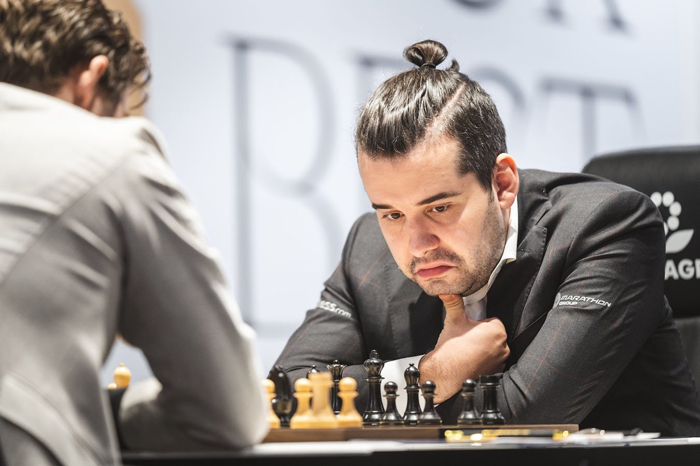

Campeonato Mundial de Ajedrez 2021
El Campeonato Mundial de Ajedrez 2021 (57º en la historia del ajedrez) se llevó a cabo del 24 de noviembre al 10 de diciembre de 2021 en Dubái, entre el actual campeón mundial Magnus Carlsen (Noruega) y el retador Ian Nepomniachtchi (Rusia).
Se esperaba que el match constara de 14 partidas, en lugar de las 12 partidas del año 2018. El 10 de diciembre, después de la undécima partida, el match terminó anticipadamente con la victoria del actual campeón Magnus Carlsen por un marcador de 7½ - 3½.
Participantes
Campeón actual

Magnus Carlsen
31 años
Ranking al comienzo del match: 2855
Retador
Ian Nepomniachtchi
31 años
Ranking al comienzo del match: 2782
El retador al título de campeón mundial fue Ian Nepomniachtchi, ganador del torneo de candidatos de doble vuelta celebrado en Ekaterimburgo. Inicialmente, el torneo debía llevarse a cabo del 15 de marzo al 5 de abril de 2020, pero después de la primera vuelta fue suspendido debido a la pandemia de coronavirus. La segunda mitad del torneo se jugó en el mismo lugar, Ekaterimburgo, del 19 al 27 de abril de 2021.
La partida clave en la lucha por la corona de ajedrez fue la sexta partida del match, que tuvo lugar el 3 de diciembre de 2021. Esta partida rompió el récord de la mayor cantidad de movimientos en partidas por el título de campeón mundial, con 136 movimientos. El récord anterior era de 124 movimientos en el match entre Karpov y Kortchnoi en 1978. También fue la primera partida en más de cinco años con control de tiempo clásico en los matches por el título de campeón mundial que terminó con la victoria de uno de los jugadores; antes de este evento, la última partida con un resultado decisivo fue la décima partida del match de 2016, en la que Magnus Carlsen venció a Sergey Karjakin, seguida de 19 partidas que terminaron en empate.
Después de esta partida, Ian cometió varios errores graves en las siguientes partidas y no pudo encontrar su juego. Algunos de los errores dejaron al campeón mundial en verdadero shock: